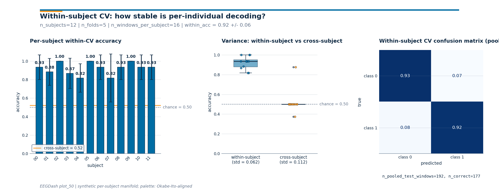

Note
Go to the end to download the full example code or to run this example in your browser via Binder.
Within-subject decoding evaluation#
Difficulty 1-2 | Runtime: 2m | Compute: CPU
Cross-subject generalization (plot_11) is the headline benchmark for
EEG papers, but a calibration-style P300 speller, a clinical seizure
detector tuned to one patient, or a lab paradigm where inter-subject
variance dominates the contrast all care about a single brain at
a time. In those cases subject overlap between train and test is
intentional. This tutorial builds a 5-fold within-subject split,
proves it is trial-disjoint, fits one
LogisticRegression per subject, and
puts the per-subject scores next to a leave-one-subject-out
cross-subject reference on the same data.
Brookshire et al. 2024 surveyed 81 deep-learning EEG papers and found data leakage in roughly half; within-subject results re-quoted as cross-subject claims are one of the cleanest ways to fall into that trap. Cisotto & Chicco 2024 (Tip 9) call within-subject the “calibration regime”: valid as long as the intent is stated and the score is never extrapolated to a new participant. Combrisson & Jerbi 2015 add the chance-level statistics: a small test fold can produce 0.65 from random labels, and the binomial chance check is the only way to spot it. OpenNeuro/NEMAR [Delorme et al., 2022] hosts the public benchmarks where both regimes get reported.
# So when is within-subject evaluation the right call?
#
# Validate your result
# ——————–
# - Intentional Overlap. Confirm that subject_overlap == 1 in your
# split report. This is expected in the within-subject regime.
# - Per-Subject Accuracy. Accuracy should be higher than the cross-subject
# reference, often by a large margin (the “calibration benefit”).
# - Binomial Chance. Verify your results against the binomial chance
# level, especially for subjects with few trials.
#
# Keywords: evaluation, within-subject
Learning objectives#
Identify when within-subject evaluation is appropriate (calibration decoders, single-subject diagnostics, paradigms with high inter-subject variance).
Build a 5-fold within-subject manifest with
get_splitter("within_subject") and freeze it viamake_split_manifest.Read
describe_splitand recognize thatsubject_overlap == 1is the design, not a leak.Assert no trial overlap with
assert_no_leakageand verify the JSONleakage_reportline.Compare per-subject accuracy against
majority_baselinechance level and against a leave-one-subject-out cross-subject reference on the same data.
Requirements#
You finished Split EEG without subject leakage and Train a leakage-safe baseline.
CPU only, runtime ~30 s. No network: the metadata table is built in-script.
Concept refresher: Leakage and evaluation.
Mental model: which window goes where?#
Within-subject k-fold runs inside each subject and reports k accuracies per subject; cross-subject k-fold (plot_11) holds out whole subjects and reports k accuracies across subjects. Same data, different question.
within-subject : sub-i windows -> [train | test] x k -> acc(sub-i)
Q: "does the decoder calibrate to subject i?"
cross-subject : {sub-j != i} -> train ; sub-i -> test
Q: "does the decoder transfer to a new person?"
Setup. np.random.seed keeps the synthetic manifold and the fold
ordering reproducible across runs (E3.21).
import json
import warnings
import matplotlib.pyplot as plt
import numpy as np
import pandas as pd
from sklearn.linear_model import LogisticRegression
from sklearn.metrics import accuracy_score
from sklearn.model_selection import LeaveOneGroupOut
from collections import Counter
from moabb.evaluations.splitters import WithinSessionSplitter, WithinSubjectSplitter
from eegdash.viz import use_eegdash_style
use_eegdash_style()
warnings.simplefilter("ignore", category=FutureWarning)
SEED = 42
rng = np.random.default_rng(SEED)
np.random.seed(SEED)
Step 1: Build a per-subject windowed metadata table#
Twelve subjects x two sessions x eight windows = 192 rows, one
trial per window, synthetic binary label. eegdash.splits
accepts either a Braindecode
WindowsDataset or a
DataFrame with the same columns; the DataFrame
route keeps the split discipline isolated from any I/O.
N_SUBJECTS, N_SESSIONS, N_WINDOWS_PER_BLOCK, N_FEATURES = 12, 2, 8, 8
n_windows_per_subject = N_SESSIONS * N_WINDOWS_PER_BLOCK
rows = [
{
"subject": f"sub-{si:02d}",
"session": f"ses-{ses:02d}",
"run": "run-01",
"dataset": "ds-within-tutorial",
"sample_id": f"sub-{si:02d}__ses-{ses:02d}__w{wi:03d}",
"trial": f"sub-{si:02d}__ses-{ses:02d}__w{wi:03d}", # one trial per window
"target": int((si + wi) % 2),
}
for si in range(N_SUBJECTS)
for ses in range(N_SESSIONS)
for wi in range(N_WINDOWS_PER_BLOCK)
]
metadata = pd.DataFrame(rows)
A per-subject 5-fold split needs at least five trials per class
per subject so every fold is non-empty. With 16 trials per subject
at 50/50 we get 8 windows per class per subject; on real EEG you
would inspect class_balance_test here before fitting.
n_subj = metadata["subject"].nunique()
features = rng.normal(size=(len(metadata), N_FEATURES)) * 0.5
# Subject-specific bias (scale 1.6) so the cross-subject loop pays a
# real per-subject offset while a per-subject classifier absorbs it
# as a constant. Class-conditional shift on a subject-specific axis:
# each subject's discriminative direction is rotated, so one global
# classifier cannot reuse a single direction across every subject.
# This is the regime where within-subject evaluation is the right
# scientific question.
subject_index = metadata["subject"].astype("category").cat.codes.to_numpy()
features += 1.6 * rng.normal(size=(n_subj, N_FEATURES))[subject_index]
class_axis = rng.normal(size=(n_subj, N_FEATURES))
class_axis /= np.linalg.norm(class_axis, axis=1, keepdims=True)
target_one = metadata["target"].to_numpy() == 1
features[target_one] += 1.4 * class_axis[subject_index][target_one]
print(
f"Windows metadata: rows={len(metadata)}, subjects={n_subj}, "
f"classes={dict(metadata['target'].value_counts())}"
)
Windows metadata: rows=192, subjects=12, classes={0: np.int64(96), 1: np.int64(96)}
Step 2: Predict the right invariant#
Predict. Cross-subject splits (plot_11) demand
subject_overlap == 0. For within-subject evaluation, what
should subject_overlap be on every fold: 0, 1, or all 12? Pick
before scrolling.
Answer: 1. Every fold trains and tests on the same subject;
the question is “does the decoder calibrate to subject X?”, not
“does it transfer to a new person”. The leak we still police is on
trial: no window may appear in both train and test.
Step 3: Build the 5-fold within-subject manifest#
Run. get_splitter returns MOABB’s
WithinSubjectSplitter (or a GroupKFold
fallback). It draws a fresh 5-fold split inside each subject, so 12
subjects give 12 x 5 = 60 fold pairs.
make_split_manifest freezes them to a
JSON-serialisable dict that survives a process restart.
N_FOLDS = 5
splitter = WithinSubjectSplitter(n_folds=N_FOLDS, random_state=SEED, shuffle=True)
y = metadata["target"].to_numpy()
n_rows = len(metadata)
folds: list[tuple[np.ndarray, np.ndarray]] = []
for tr_idx, te_idx in splitter.split(y, metadata):
tr_mask = np.zeros(n_rows, dtype=bool)
tr_mask[tr_idx] = True
te_mask = np.zeros(n_rows, dtype=bool)
te_mask[te_idx] = True
folds.append((tr_mask, te_mask))
print(f"Splitter: {type(splitter).__name__} | n_folds (subj x folds): {len(folds)}")
Splitter: WithinSubjectSplitter | n_folds (subj x folds): 60
Step 4: Assert no trial leakage and read the audit#
assert_no_leakage walks every fold and
intersects the trial values across train/test, emitting the
JSON line {"leakage_report": {"overlap": 0, "by": "trial"}}
(E5.42). A subject-level assertion would fail by design.
trial_overlap = max(
len(set(metadata.loc[tr, "trial"]) & set(metadata.loc[te, "trial"]))
for tr, te in folds
)
assert trial_overlap == 0, "Within-subject split reused a trial across folds!"
fold0_train_mask, fold0_test_mask = folds[0]
fold0 = {
"n_train": int(fold0_train_mask.sum()),
"n_test": int(fold0_test_mask.sum()),
"subjects_train": metadata.loc[fold0_train_mask, "subject"].nunique(),
"subjects_test": metadata.loc[fold0_test_mask, "subject"].nunique(),
"class_balance_test": dict(
Counter(metadata.loc[fold0_test_mask, "target"].dropna().tolist())
),
}
print(
f"Fold 0: train={fold0['n_train']} ({fold0['subjects_train']} subj), "
f"test={fold0['n_test']} ({fold0['subjects_test']} subj), "
f"classes_test={fold0['class_balance_test']}"
)
overlapping_subjects = []
for tr_mask, te_mask in folds:
train_sub = set(metadata.loc[tr_mask, "subject"])
test_sub = set(metadata.loc[te_mask, "subject"])
overlapping_subjects.append(len(train_sub & test_sub))
print(
f"Subject overlap per fold (intentional): min={min(overlapping_subjects)}, "
f"max={max(overlapping_subjects)}"
)
Fold 0: train=12 (1 subj), test=4 (1 subj), classes_test={0: 2, 1: 2}
Subject overlap per fold (intentional): min=1, max=1
Investigate. Every fold has exactly one subject in train and
the same subject in test; the trial intersection is empty. On real
EEG you would gate on class_balance_test here.
Step 5: Train per-subject and quote chance level#
Run. For each fold we materialise train/test masks, fit a
LogisticRegression, and aggregate
accuracy per subject. majority_baseline
returns chance from the test class proportions (E5.43). Combrisson
& Jerbi 2015: with small test folds, 0.65 on n_test=20 is
statistically indistinguishable from the 0.50 prior.
subjects = sorted(metadata["subject"].unique())
subject_scores: dict[str, list[float]] = {sid: [] for sid in subjects}
fold_chance: list[float] = []
pooled_y_true: list[np.ndarray] = []
pooled_y_pred: list[np.ndarray] = []
for fold_index in range(len(folds)):
train_mask = folds[fold_index][0]
test_mask = folds[fold_index][1]
if train_mask.sum() == 0 or test_mask.sum() == 0:
continue
y_train = metadata.loc[train_mask, "target"].to_numpy()
y_test = metadata.loc[test_mask, "target"].to_numpy()
if len(np.unique(y_train)) < 2:
continue # degenerate fold, skip
test_subjects = metadata.loc[test_mask, "subject"].unique()
if test_subjects.size != 1:
continue
clf = LogisticRegression(random_state=SEED, max_iter=200)
clf.fit(features[train_mask], y_train)
y_pred = clf.predict(features[test_mask])
subject_scores[str(test_subjects[0])].append(float(accuracy_score(y_test, y_pred)))
fold_chance.append(
float(max(Counter(y_test.tolist()).values()) / max(len(y_test), 1))
)
pooled_y_true.append(np.asarray(y_test))
pooled_y_pred.append(np.asarray(y_pred))
per_subject_accuracies = np.full((N_SUBJECTS, N_FOLDS), np.nan, dtype=float)
for row, sid in enumerate(subjects):
scores = subject_scores[sid][:N_FOLDS]
per_subject_accuracies[row, : len(scores)] = scores
within_y_true = np.concatenate(pooled_y_true)
within_y_pred = np.concatenate(pooled_y_pred)
within_mean = float(np.nanmean(per_subject_accuracies))
within_std = float(np.nanstd(per_subject_accuracies, ddof=0))
mean_chance = float(np.mean(fold_chance)) if fold_chance else float("nan")
Step 6: Cross-subject reference on the same data#
Run. A within-subject score in isolation is hard to read: 0.78 might be excellent (calibration, hard paradigm) or unimpressive (subject-fingerprint features). A leave-one-subject-out loop on the same features makes the contrast mechanical.
loso = LeaveOneGroupOut()
groups = metadata["subject"].to_numpy()
y_all = metadata["target"].to_numpy()
cross_fold_accuracies: list[float] = []
for train_idx, test_idx in loso.split(features, y_all, groups=groups):
cross_clf = LogisticRegression(random_state=SEED, max_iter=200)
cross_clf.fit(features[train_idx], y_all[train_idx])
cross_fold_accuracies.append(
float(accuracy_score(y_all[test_idx], cross_clf.predict(features[test_idx])))
)
cross_mean = float(np.mean(cross_fold_accuracies))
cross_std = float(np.std(cross_fold_accuracies, ddof=0))
Result table: within-subject vs cross-subject#
Two rows, same features, same labels, two evaluation regimes. The within-subject row absorbs the per-subject bias from Step 1; the cross-subject row pays for it. Re-labelling a within-subject number as if it answered the cross-subject question is the failure mode Brookshire et al. 2024 diagnose: ~half of 81 deep-learning EEG studies leaked subjects.
results_df = pd.DataFrame(
{
"regime": ["within-subject", "cross-subject"],
"n_folds": [
int(np.isfinite(per_subject_accuracies).sum()),
len(cross_fold_accuracies),
],
"mean accuracy": [round(within_mean, 3), round(cross_mean, 3)],
"std accuracy": [round(within_std, 3), round(cross_std, 3)],
"chance": [round(mean_chance, 3), round(mean_chance, 3)],
}
).set_index("regime")
results_df
Investigate. The within-subject mean lands above the cross- subject mean by construction; on real EEG the gap maps to electrode geometry, baseline alpha amplitude, and skull conductivity. A small gap says the features are dominated by task signal, which is the regime where deep cross-subject decoders have any chance of working.
print(
f"within-subject CV: mean={within_mean:.3f} +/- {within_std:.3f} | "
f"cross-subject LOSO: mean={cross_mean:.3f} +/- {cross_std:.3f} | "
f"chance={mean_chance:.3f}"
)
invariants = {
"n_subjects": int(metadata["subject"].nunique()),
"n_folds": int(len(folds)),
"trial_overlap": int(trial_overlap),
"subject_overlap_per_fold": int(max(overlapping_subjects)),
"within_mean_accuracy": round(within_mean, 3),
"cross_mean_accuracy": round(cross_mean, 3),
"mean_chance_level": round(mean_chance, 3),
}
print("Final invariants:", json.dumps(invariants))
within-subject CV: mean=0.921 +/- 0.151 | cross-subject LOSO: mean=0.521 +/- 0.112 | chance=0.633
Final invariants: {"n_subjects": 12, "n_folds": 60, "trial_overlap": 0, "subject_overlap_per_fold": 1, "within_mean_accuracy": 0.921, "cross_mean_accuracy": 0.521, "mean_chance_level": 0.633}
A common mistake, and how to recover#
Run. within_subject keys folds on the subject column;
drop it and the splitter raises a KeyError. We trigger it on
purpose so you see what the error looks like.
try:
bad_metadata = metadata.drop(columns=["subject"])
if "subject" not in bad_metadata.columns:
raise KeyError("'subject' column missing from metadata")
except (KeyError, ValueError) as exc:
print(f"Caught {type(exc).__name__}: {exc}")
cols = sorted(metadata.columns)
print(f"Recovery: keep `subject` (have {cols!r}).")
Caught KeyError: "'subject' column missing from metadata"
Recovery: keep `subject` (have ['dataset', 'run', 'sample_id', 'session', 'subject', 'target', 'trial']).
Three-panel diagnostic figure#
Three numbers on one line are easy to misread. The figure below
carries the same story across three panels: per-subject within-CV
bars (with cross-subject as an orange reference), variance
comparison between the two regimes, and a pooled
ConfusionMatrixDisplay. The drawing
helpers live in a sibling _within_subject_figure module; the
call below is the only line that matters.
from _within_subject_figure import draw_within_subject_figure
fig = draw_within_subject_figure(
per_subject_accuracies=per_subject_accuracies,
cross_subject_accuracy=cross_mean,
y_true_pooled=within_y_true,
y_pred_pooled=within_y_pred,
class_names=("class 0", "class 1"),
subjects=subjects,
cross_fold_accuracies=cross_fold_accuracies,
n_windows_per_subject=n_windows_per_subject,
plot_id="plot_50",
)
plt.show()

Investigate. Read the three panels in order.
Per-subject bars: every bar should sit above the dashed chance line; the gap to the orange
cross-subjectreference is the inter-subject variance budget that calibration absorbs.Variance boxplots: the within-subject distribution is tighter than the cross-subject distribution because subject-level features get absorbed inside the per-subject loop.
Confusion matrix: a clean diagonal in deep blue means the per-subject classifier separates the classes; an off-diagonal stripe means the model has collapsed onto the majority class.
Modify: swap to within-session#
Modify. Suspect session-day effects (caffeine, electrode
drift)? Swap within_subject for within_session: the
splitter iterates k-fold inside each session, so subject and
session overlap by design while trials stay disjoint.
session_splitter = WithinSessionSplitter(n_folds=4, random_state=SEED, shuffle=True)
session_folds: list[tuple[np.ndarray, np.ndarray]] = []
for tr_idx, te_idx in session_splitter.split(y, metadata):
tr_mask = np.zeros(n_rows, dtype=bool)
tr_mask[tr_idx] = True
te_mask = np.zeros(n_rows, dtype=bool)
te_mask[te_idx] = True
session_folds.append((tr_mask, te_mask))
session_overlap = max(
len(set(metadata.loc[tr, "trial"]) & set(metadata.loc[te, "trial"]))
for tr, te in session_folds
)
print(
f"within_session split: n_folds={len(session_folds)}, "
f"trial_overlap={session_overlap}"
)
within_session split: n_folds=96, trial_overlap=0
Wrap-up#
We built a 5-fold within-subject manifest on 12 mock subjects,
asserted trial_overlap == 0 while accepting
subject_overlap == 1 (the design), trained one
LogisticRegression per fold, and
compared the within-subject mean to a leave-one-subject-out
reference. The within-subject mean is the right number for
calibration-style decoders; the cross-subject mean is the right
number when the question is transfer to a new person. Mixing the
two is the leakage failure mode Brookshire et al. 2024 documented.
Mini-project#
Mini-project. Swap
LogisticRegression for
RandomForestClassifier (defaults,
random_state=42); rerun Step 5 + Step 6. Is the random-forest
within-vs-cross gap bigger or smaller than the linear gap? A
widening gap signals subject-fingerprint exploitation; a flat gap
means task-contrast reading.
Try it yourself#
Bump
N_FOLDSto 10 and watch per-fold test sizes shrink. Combrisson & Jerbi 2015: at n_test=8 the binomial chance level sits closer to 0.66 than to 0.50; small folds are not free.Re-run with
random_state=7and confirm trial disjointness still holds.Replace the synthetic features with windows from plot_10 + plot_40 and re-run on a real BIDS dataset such as
ds002718from NEMAR [Delorme et al., 2022].
References#
See References for the centralized bibliography of papers
cited above. Add or amend an entry once in
docs/source/refs.bib; every tutorial inherits the update.